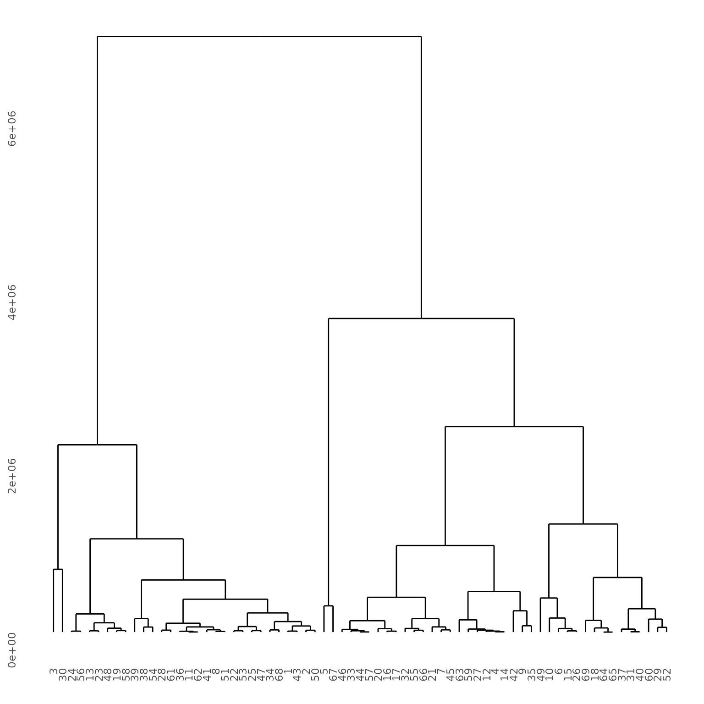

splits
splits.RmdGet segment labels
Splits, or segments, measure at what time a game event happens, and how long a player took to get there from their previous segment.
Unique split id?
Although segments are chosen by a program, so far we’ve only found the player labels for each split or segment. Players can define their own segments and labels, too, so we don’t want to confuse those points with others.
On the other hand we don’t want to keep bomb and throw
out all the bombs with the bathwater.
labels_dat <-
# pull columns for this analysis from splits data
sio_splits_df %>%
select(player_name, game_event, name, segment_number, run_id, player_id) %>%
mutate(
# create a lower-case label
label = tolower(game_event)
)
labels_dat %>% head()
#> player_name game_event name segment_number run_id
#> 0 anatomecha Morphing Ball Morphing Ball 0 ato1
#> 1 anatomecha First Missiles First Missiles 1 ato1
#> 2 anatomecha Bomb Bomb 2 ato1
#> 3 anatomecha First Super Missiles First Super Missiles 3 ato1
#> 4 anatomecha Charge Beam Charge Beam 4 ato1
#> 5 anatomecha Spazer Spazer 5 ato1
#> player_id label
#> 0 89646 morphing ball
#> 1 89646 first missiles
#> 2 89646 bomb
#> 3 89646 first super missiles
#> 4 89646 charge beam
#> 5 89646 spazerMost common labels
label_counts <-
labels_dat %>%
mutate(
starts_with = str_sub(label, 1, 1)
) %>%
count(starts_with, label) %>%
arrange(starts_with, desc(n))| label | n |
|---|---|
| space jump | 411 |
| screw attack | 360 |
| bombs | 339 |
| gravity suit | 326 |
| phantoon | 294 |
| plasma beam | 271 |
| speed booster | 262 |
| varia suit | 259 |
| spring ball | 257 |
| wave beam | 252 |
| ice beam | 248 |
| charge beam | 231 |
| grapple beam | 207 |
| spazer | 203 |
| x-ray | 203 |
| golden 4 | 154 |
| varia | 154 |
| morph ball | 153 |
| ridley e-tank | 143 |
| ridley | 142 |
| g4 | 119 |
| ridley's e-tank | 115 |
| x-ray scope | 115 |
| botwoon | 113 |
| turtle e-tank | 113 |
| grapple | 112 |
| golden four | 105 |
| gravity | 105 |
| escape! | 96 |
| kraid | 94 |
# write labels to sheet for labelling
# https://docs.google.com/spreadsheets/d/1FRHsS7WQvVhI5_yP-twHCJW2YRJRbeKg4P42EY3Jzrk/edit#gid=1079532092
write_csv(label_counts, "data-raw/sio-label-counts.csv")
relabels <- googlesheets4::read_sheet("https://docs.google.com/spreadsheets/d/1FRHsS7WQvVhI5_yP-twHCJW2YRJRbeKg4P42EY3Jzrk/edit#gid=1079532092")
write_csv(relabels, "data-raw/sio-relabels.csv")Add labels
relabels <- read_csv("data-raw/sio-relabels.csv") %>%
select(label, supermetroid_label) %>%
distinct()
#> Error: 'data-raw/sio-relabels.csv' does not exist in current working directory ('/home/runner/work/supermetroid/supermetroid/vignettes').
sio_relabelled <-
sio_splits_df %>%
mutate(
label = tolower(game_event),
label = if_else(
label == "grappling beam", "grapple beam", label
)
) %>%
left_join(relabels, by = "label")
#> Error: object 'relabels' not found
# check out counts now
sio_relabelled %>%
ungroup() %>%
count(label) %>%
arrange(desc(n)) %>%
gt()
#> Error in eval(expr, envir, enclos): object 'sio_relabelled' not found
sio_df <- sio_relabelled %>%
select(-name) %>%
select(supermetroid_label, everything(), split_player = label)
#> Error in eval(expr, envir, enclos): object 'sio_relabelled' not found
sio_df %>% head()
#> supermetroid_label player_name game_event segment_number
#> 1 morph ball anatomecha Morphing Ball 0
#> 2 <NA> anatomecha First Missiles 1
#> 3 bombs anatomecha Bomb 2
#> 4 <NA> anatomecha First Super Missiles 3
#> 5 charge beam anatomecha Charge Beam 4
#> 6 spazer anatomecha Spazer 5
#> realtime_start_ms segment_id run_id player_id
#> 1 0 69d90da3-1634-4af4-9096-419a32bedd0a ato1 89646
#> 2 200835 fad50319-d55b-460e-923a-c416f233daea ato1 89646
#> 3 224926 089daf0b-64c3-4eec-8902-022335b2b179 ato1 89646
#> 4 358321 2a215dcd-2989-4939-8558-a7215904dfd1 ato1 89646
#> 5 589662 e906991d-e919-47c1-a809-2b4da9b67461 ato1 89646
#> 6 709962 10439232-43c7-4752-afb9-ee23782da4a9 ato1 89646
#> realtime_duration_ms realtime_end_ms realtime_shortest_duration_ms
#> 1 200835 200835 200835
#> 2 24091 224926 23286
#> 3 133395 358321 129371
#> 4 231341 589662 227335
#> 5 120300 709962 120299
#> 6 97876 807838 95884
#> realtime_gold split_player split
#> 1 TRUE morphing ball morphing ball
#> 2 FALSE first missiles first missiles
#> 3 FALSE bomb bomb
#> 4 FALSE first super missiles first super missiles
#> 5 FALSE charge beam charge beam
#> 6 FALSE spazer spazer
usethis::use_data(sio_df)What routes do people take?
routes_raw <-
sio_df %>%
select(supermetroid_label, player_name, split_order = segment_number, realtime_end_ms, run_id, player_id) %>%
# get just the universal splits
filter(!is.na(supermetroid_label))
splits_orders <-
routes_raw %>%
select(supermetroid_label, split_order, run_id)
nested_splits <-
splits_orders %>%
arrange(run_id, split_order) %>%
select(-split_order) %>%
group_by(run_id) %>%
nest(splits = supermetroid_label) %>%
ungroup() %>%
group_by(splits) %>%
nest(runs = run_id) %>%
ungroup() %>%
mutate(
route_length = map_int(splits, nrow),
route_id = str_c("route ", 1:n())
) %>%
arrange(desc(route_length))
nested_splits %>%
head() %>%
gt()| splits | runs | route_length | route_id |
|---|---|---|---|
| c("morph ball", "bombs", "first supers", "charge beam", "kraid", "varia suit", "hi-jump boots", "speed booster", "wave beam", "crocomire", "grapple beam", "ice beam", "phantoon", "gravity suit", "gauntlet e-tank", "spore spawn supers", "spore spawn supers", "draygon", "space jump", "spring ball", "plasma beam", "screw attack", "x-ray", "golden 4", "golden 4", "kraid", "phantoon", "draygon", "ridley") | zwv | 29 | route 167 |
| c("ridley", "morph ball", "bombs", "first supers", "charge beam", "spazer", "kraid", "varia suit", "hi-jump boots", "speed booster", "wave beam", "crocomire", "grapple beam", "ice beam", "phantoon", "gravity suit", "spore spawn supers", "draygon", "space jump", "spring ball", "plasma beam", "screw attack", "ridley", "x-ray") | c("2h20", "2h5x", "2l5q", "2q6n", "30jr", "3b65", "3vjk", "40wo", "47j9", "56yj", "5hht", "5ykr") | 24 | route 29 |
| c("morph ball", "bombs", "first supers", "charge beam", "spazer", "kraid", "varia suit", "hi-jump boots", "speed booster", "wave beam", "grapple beam", "phantoon", "gravity suit", "spore spawn supers", "draygon", "space jump", "spring ball", "plasma beam", "ice beam", "screw attack", "ridley", "x-ray", "golden 4", "escape") | amcl | 24 | route 159 |
| c("morph ball", "bombs", "charge beam", "spazer", "kraid", "varia suit", "hi-jump boots", "speed booster", "wave beam", "grapple beam", "ice beam", "phantoon", "gravity suit", "draygon", "space jump", "spring ball", "plasma beam", "screw attack", "ridley", "x-ray", "mother brain", "escape") | ato1 | 22 | route 162 |
| c("morph ball", "first supers", "charge beam", "spazer", "kraid", "varia suit", "hi-jump boots", "speed booster", "wave beam", "crocomire", "grapple beam", "phantoon", "spore spawn supers", "draygon", "space jump", "spring ball", "plasma beam", "ice beam", "screw attack", "ridley", "x-ray") | c("5g6d", "5g6e") | 21 | route 86 |
| c("morph ball", "bombs", "spazer", "kraid", "varia suit", "hi-jump boots", "wave beam", "crocomire", "grapple beam", "phantoon", "gravity suit", "spore spawn supers", "draygon", "space jump", "plasma beam", "ice beam", "screw attack", "ridley", "x-ray", "golden 4", "mother brain") | 6zvk | 21 | route 107 |
anatomecha_splits <-
# get standard order
sio_df %>%
filter(player_name == "anatomecha",!is.na(supermetroid_label)) %>%
arrange(segment_number) %>%
# should really filter to last date
# will need to fix this when there's more than one anatomecha run
select(supermetroid_label) %>%
mutate(split_anatomecha = 1:n())
levels(sio_df$split) <- anatomecha_splits$split
usethis::use_data(anatomecha_splits)
routes <-
nested_splits %>%
# head() %>%
mutate(event = map(splits, \(df) left_join(df, anatomecha_splits, by = "supermetroid_label")),
route_anatomecha = map(event, \(df) df %>% filter(!is.na(split_anatomecha)) %>% pull(split_anatomecha)),
route_standard = map_lgl(route_anatomecha,
\(x) all(sort(x) == x))
)
time vs cumulative time by splits
# dashboard this for y axis
# dashboard this for x axis, too selector tool with tick boxes, select all, clear
# plot <-
sio_df %>%
left_join(anatomecha_splits, by = "supermetroid_label") %>%
filter(!is.na(supermetroid_label)) %>%
mutate(split_anatomecha = as_factor(split_anatomecha),
t_h = realtime_end_ms/1000/60
) %>%
ggplot(aes(x = split_anatomecha, y = t_h, group=run_id)) +
geom_line(colour=sm_cols$orange, alpha = 0.2) +
geom_point(colour=sm_cols$orange, alpha = 0.2) +
theme_sm(base_size = 30) +
labs(
title = "Players take different routes",
subtitle = "Real time completion of each game event would be
always increasing if all players took the same route as anatomecha" %>% str_wrap(60),
x = "Game event (loot, boss, etc.)" %>% str_wrap(12),
y = "Real time completion (minutes)" %>% str_wrap(20),
caption = "splits.io"
) +
theme(
axis.text.x = element_text(angle=90)
) +
scale_x_discrete(labels=c("start", anatomecha_splits$supermetroid_label)) +
facet_grid(route_standard ~. )
#> Error in `combine_vars()`:
#> ! At least one layer must contain all faceting variables:
#> `route_standard`
#> ✖ Plot is missing `route_standard`
#> ✖ Layer 1 is missing `route_standard`
#> ✖ Layer 2 is missing `route_standard`
# ggplotly(plot)
# selected_split <- "ice beam"
selected_split <- "ice beam"# sample(anatomecha_splits$supermetroid_label, 1)
rank <- c(1,25)
#xlim <- c(0.8, 1.2)
# +
# xlim(xlim[1], xlim[2])Towards the best route
identifying clusters
Try knn
Wide-form array: - columns as events - rows as routes - values as mean event time
I think this should work on individual observations.
- Get an array of segments
- Set an n-fold cross validation
- Evaluated the accuracy of the KNn classifer with different values of k by cross validation
# get an array of segmentsidentifying clusters
Try taking the mean value of each event of each route, then imputing the missing values from local means. How to impute via local mean? That is, need to impute, conditional on the other values in the array. Need to read about imputation. Perhaps I should just write my own imputation, I think I could calculate that. Then apply hierarchical clustering to find out which.
# create wideform array
routes_wide <-
routes_raw %>%
rename(game_event = supermetroid_label) %>%
group_by(run_id) %>%
filter(realtime_end_ms == max(realtime_end_ms),
game_event %in% anatomecha_splits$supermetroid_label
) %>%
ungroup() %>%
distinct() %>%
# dplyr::group_by(run_id, game_event) %>%
# dplyr::summarise(n = dplyr::n(), .groups = "drop") %>%
# dplyr::filter(n > 1L)
pivot_wider(id_cols = "run_id",
names_from = "game_event",
values_from = "realtime_end_ms")
library(caret)
#> Error in library(caret): there is no package called 'caret'
trControl <- trainControl(method = "cv",
number = 5)
#> Error in trainControl(method = "cv", number = 5): could not find function "trainControl"
fit <- train(supermetroid_label ~ realtime_end_ms,
method = "knn",
tuneGrid = expand.grid(k = 1:10),
trControl = trControl,
metric = "Accuracy",
data = routes_raw)
#> Error in train(supermetroid_label ~ realtime_end_ms, method = "knn", tuneGrid = expand.grid(k = 1:10), : could not find function "train"
routes_wide <-
routes %>%
select(route_id, runs) %>%
unnest(runs) %>%
left_join(sio_df %>%
filter(split %in% anatomecha_splits$supermetroid_label) %>%
select(run_id,
realtime_end_ms, split) %>%
group_by(run_id, split) %>%
filter(realtime_end_ms==max(realtime_end_ms)),
by = "run_id") %>%
group_by(route_id, run_id) %>%
# 0 entries must be corrupt?
filter(realtime_end_ms != 0) %>%
pivot_wider(names_from = "split", values_from = "realtime_end_ms") %>%
janitor::clean_names()
sio_routes_wide <- routes_wide
usethis::use_data(sio_routes_wide)
library(caret)
#> Error in library(caret): there is no package called 'caret'
preProcValues <-
preProcess(routes_wide %>% ungroup() %>% select(-c(run_id, route_id)))
#> Error in preProcess(routes_wide %>% ungroup() %>% select(-c(run_id, route_id))): could not find function "preProcess"
trControl <- trainControl(method = "cv",
number = 5)
#> Error in trainControl(method = "cv", number = 5): could not find function "trainControl"
# routes_wide %>% names() %>% paste(collapse ="+") %>% cat()
fit <-
train(
route_id ~ morph_ball + bombs +
charge_beam + varia_suit + speed_booster +
wave_beam + grapple_beam + ice_beam + gravity_suit +
space_jump + spring_ball +
plasma_beam + screw_attack + spazer +
hi_jump_boots + phantoon + draygon +
ridley + kraid + x_ray + mother_brain + escape,
method = "knn",
tuneGrid = expand.grid(k = 1:10),
trControl = trControl,
metric = "Accuracy",
data = routes_wide
)
#> Error in train(route_id ~ morph_ball + bombs + charge_beam + varia_suit + : could not find function "train"
predict(preProcValues)
#> Error in eval(expr, envir, enclos): object 'preProcValues' not found
ice_beam <-
routes_wide %>%
select(route_id, route_id, ice_beam) %>%
group_by(route_id) %>%
summarise(
ice_beam = mean(ice_beam)
) %>%
ungroup() %>%
filter(!is.na(ice_beam))
#> Adding missing grouping variables: `run_id`
clusters <- dist(ice_beam) %>% hclust()
#> Warning in dist(ice_beam): NAs introduced by coercion
plot(clusters, labels = ice_beam$route_id)
library(ggdendro)
ggdendrogram(clusters)
# fuckit write csv
write_csv(routes_wide, "dev/routes_wide.csv")
#> Error: Cannot open file for writing:
#> * 'dev/routes_wide.csv'import numpy as np
#> No module named 'numpy'
from sklearn.impute import KNNImputer
#> No module named 'sklearn'
routes_wide = pd.read_csv("dev/routes_wide.csv")
#> name 'pd' is not defined
imputer = KNNImputer()
#> name 'KNNImputer' is not defined
df_knn_imputed = pd.DataFrame(imputer.fit_transform(routes_wide.drop(columns = ['run_id', 'route_id'])))
#> name 'pd' is not defined
# set up df of imputed data in R
x_event = py$df_knn_imputed
#> Error in eval(expr, envir, enclos): object 'py' not found
colnames(x_event) <- routes_wide %>% ungroup() %>% select(-c(route_id, run_id)) %>% colnames()
#> Error: object 'x_event' not found
routes_imputed =
routes_wide %>% select(route_id, run_id) %>% bind_cols(x_event)
#> Error: object 'x_event' not found
# try using caret to do knn classification
routes_imputed %>% View()
#> Error in eval(expr, envir, enclos): object 'routes_imputed' not found
routes_scaled <-
routes_imputed %>%
ungroup() %>%
select(-c(route_id, run_id)) %>%
mutate(across(everything(), scale)) %>%
bind_cols(routes_imputed %>% select(route_id, run_id)) %>%
select(route_id, run_id, everything())
#> Error in eval(expr, envir, enclos): object 'routes_imputed' not found
# https://rpubs.com/pmtam/knn
# Run algorithms using 10-fold cross validation
trainControl <- trainControl(method="repeatedcv", number=10, repeats=3)
#> Error in trainControl(method = "repeatedcv", number = 10, repeats = 3): could not find function "trainControl"
metric <- "Accuracy"
grid <- expand.grid(.k=seq(1,20,by=1))
fit.knn <- train(route_id # ~ ice_beam,
~ # run_id
+ morph_ball + bombs +
charge_beam + varia_suit + speed_booster +
wave_beam + grapple_beam + ice_beam + gravity_suit +
space_jump + spring_ball +
plasma_beam + screw_attack + spazer +
hi_jump_boots + phantoon + draygon +
ridley + kraid + x_ray + mother_brain + escape,
data=routes_scaled %>% select(-run_id), method="knn",
metric=metric ,trControl=trainControl, tuneGrid=grid)
#> Error in train(route_id ~ +morph_ball + bombs + charge_beam + varia_suit + : could not find function "train"
knn.k1 <- fit.knn$bestTune # keep this Initial k for testing with knn() function in next section
#> Error in eval(expr, envir, enclos): object 'fit.knn' not found
print(fit.knn)
#> Error in eval(expr, envir, enclos): object 'fit.knn' not found